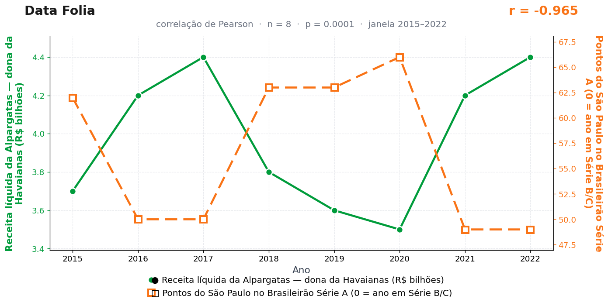

Post de 02/11/2026
A teoria
O chinelo altera a postura nacional. Ele convida o corpo a sair do modo competição e entrar no modo descanso, reduzindo a urgência que move decisões rápidas.
O São Paulo, clube de tradição cerebral e ritmo próprio, absorve esse ambiente com intensidade. Em anos de maior conforto no consumo, o ritmo do país fica menos vertical, e a campanha tricolor passa a operar em passo mais calmo.
A receita da Alpargatas entra como termômetro do conforto do país. Quando ela cresce, o Brasil pisa leve; quando o Brasil pisa leve, a tabela cobra de quem precisa correr.
O departamento médico tricolor negou registrar qualquer lesão por pisada excessivamente leve. A Alpargatas, por sua vez, não comercializa chuteira de sola de borracha — e talvez esteja aí, especula a redação, o único furo do modelo.
A teoria é ficção; a correlação é real: r = −0,96 (n = 8, p < 0,001).
Os dados por trás

- Receita líquida da Alpargatas — dona da Havaianas (R$ bilhões) — 8 pontos anuais, período 2015–2022. Fonte: Alpargatas — relatórios anuais (4T).
- Pontos do São Paulo no Brasileirão Série A (0 = ano em Série B/C) — 8 pontos anuais, período 2015–2022. Fonte: CBF / Wikipedia — Campeonato Brasileiro Série A.
Como as correlações deste site são encontradas — e por que você não deve confiar nelas — está explicado na nossa metodologia.
Por que isso acontece?
As duas séries oscilam em fases opostas por pura coincidência de calendário: a receita da Alpargatas faz um vale em 2018–2020 (3,8 → 3,5) exatamente quando o São Paulo faz seu platô mais alto (63–66 pontos), e volta a crescer em 2021–2022 quando o time recua para 49. Não há tendência comum aqui — há duas ondas desencontradas que o Pearson lê como espelho. É a versão "zigue-zague" da correlação espúria, mais rara e igualmente vazia.
O ponto central é a seleção: o São Paulo foi escolhido entre 20 clubes da Série A, e a Alpargatas entre milhares de empresas listadas com dados públicos. O número de pares possíveis é enorme; algum deles inevitavelmente espelharia a receita da empresa — calhou de ser o tricolor. Publicar só o par vencedor e esconder os perdedores é o que torna o r = −0,96 impressionante e, ao mesmo tempo, sem valor de evidência.
Em amostras de 8 pontos, coincidências de fase acontecem o tempo todo. O leitor que quiser se vacinar contra manchetes assim pode fazer uma pergunta simples: quantos outros pares foram testados antes de este chegar à página? Aqui, a resposta honesta é: muitos. Está na nossa metodologia.
Post de 02/11/2026 · publicado também no Instagram @datafolia.